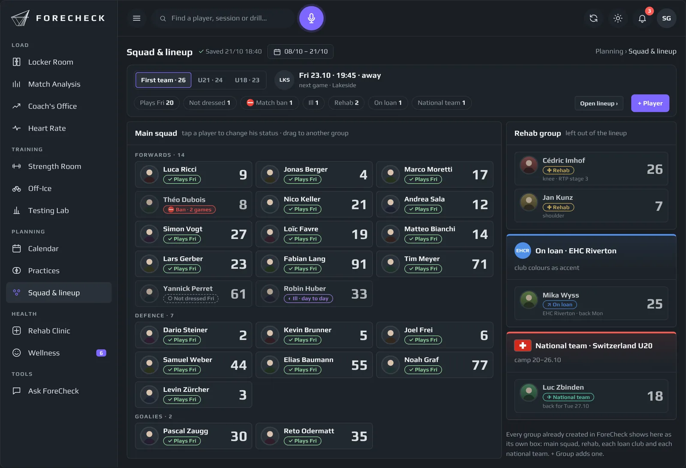

Joueurs · téléphone
Vingt secondes par jour.
Joueurs
Check-in du matin, calendrier et RPE de séance depuis le téléphone des joueursComment te sens-tu aujourd’hui ?
- Très malTrès bien
- Sommeil
- Énergie
- Courbatures
- Stress
- Humeur
Envoyé · merci
Check-in de l’équipe · ce matin
- #11 F↓Sommeil bas depuis trois nuits
- #33 G↓Courbatures élevées après le voyage
Nouveau cette saison
Suspension
iEn savoir plus
Suspendez un joueur pour un nombre de matchs dans la gestion de l'effectif. Il quitte l'alignement jusqu'à ce qu'il puisse rejouer, et tout ce qui dépend du prochain match suit. Après l'entraînement, chaque joueur touche sa photo sur l'iPad de l'équipe et note la séance. La note s'affiche à côté de ce que les capteurs ont mesuré.

Bien-être
Vingt secondes le matin
iEn savoir plus
Cinq questions rapides sur le téléphone : sommeil, énergie, courbatures, stress et humeur. Chaque réponse est un curseur sur une échelle de gris, de très mal à très bien, sans chiffres ni couleurs, pour que les joueurs répondent selon ce qu’ils ressentent, pas selon le score qu’ils croient attendu par le staff. Le staff voit qui est sous sa propre normale et a besoin d’une discussion, pas un tableur.
Comment te sens-tu aujourd’hui ?
- Très malTrès bien
- Sommeil
- Énergie
- Courbatures
- Stress
- Humeur
Envoyé · merci
RPE de séance
Le ressenti de l’effort, à côté de l’effort réel
iEn savoir plus
Après chaque séance, les joueurs notent l’effort. ForeCheck le place à côté de la charge Catapult et cardiaque, pour que les écarts sautent aux yeux.
Ressenti vs mesuré · dernier entraînement
| Ressenti (RPE) | Mesuré (0-10) | |
|---|---|---|
| #7 D | 6 | 7 |
| #11 F | 9 | 6 |
| #21 F | 5 | 5 |
| #27 F | 7 | 7 |
Calendrier
Leur semaine, sur leur téléphone
iEn savoir plus
Le même lien de calendrier privé regroupe entraînements d’équipe, matchs, muscu et séances individuelles. Aucune appli à installer, aucun identifiant à retenir.
Aujourd’hui
- Entraînement sur glace
- Vélo de récupération · 20 min
- Match à l’extérieur · car 15h00
Abonné · se met à jour tout seul
Les questions auxquelles il répond
Ce que vous décidez avec
- Qui a mal dormi avant le match d’aujourd’hui ?
- L’entraînement a-t-il semblé plus dur que ce qui a été mesuré ?
- Qui n’a pas fait son check-in cette semaine ?
- Chaque joueur connaît-il le programme de demain ?